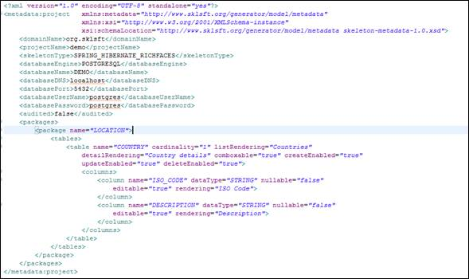
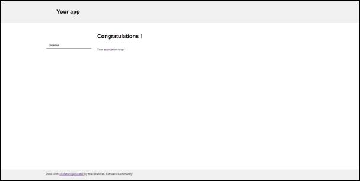

Skeleton Generator
By The Skeleton Software Community
User Guide - v1.0.x
1. Installation
1.1. From a ZIP File
A Zip distribution of the skeleton generator is available on this web site.
To install the generator, you just need to unzip it on the directiory of your choice.
Then you have to set the environment variable SKLGEN_HOME as the location of the unzipped content and declare SKLGEN_HOME\bin in your PATH variable.
You will also need to have your JAVA_HOME variable properly set.
Last, you will need to put a jdbc driver in the lib folder of your installation amongst :
- ojdbc 6 for Oracle
- postgresql for Postgresql
You can check everything is OK by launching in a shell :
Sklgen help
1.2. From the sources
The sources are available on Github. Once you have configured the maven project on your IDE, you can launch a maven installation of generator-root (mvn install).
The last command will build the zipped binary in your local repository folder (.m2\repository\org\sklsft\generator-bash\1.0.0). You can get it and install it as in the section before.
2. Quick start
2.1. Initialize your project
Once the generator has been properly installed, the first thing you have to do is to initialize your project :
Open a shell on a directory where you will define the root of your project (for example %USERPROFILE%\Workspaces\demo\demo-root). Then type :
sklgen init
You will be prompted to enter :
- Your domain which will be used as your groupId in your pom
- Your project name (demo in our example)
- Your skeleton (choose 1 preferably)
- Your database engine (choose 2 for Postgresql preferably !)
- Your database name (DEMO for example)
- Your database hostname (localhost if you have your postgresql server locally installed)
- Your database port (5432 by default for postgresql)
- Your database username (postgres or any user that have full rights on your database)
- Your database password
- Whether you want to use Hibernate envers or not (for traceability, type 0 because envers requires further more configuration that we won't detail here).
If everything is OK, enter Y.
After that, your project is ready to be run, if your database has been properly created.
If you launch your server with a jndi access to your database (jndi/demo here), open a browser and connect to localhost:8080/demo-webapp, you will have something like :

2.2. Edit your metadata
At this stage, your model is empty and the only thing you can do is to check everything is correctly configured.
Once initialized, the root directory of your project will contain a folder called "data-model" with the following tree :
data-model
- skeleton.xml
- skeleton-metadata-1.0.xsd
- CONTEXT
- datasource-context.xml
The skeleton.xml file is central and contains the metadata related to your domain model. Let's edit it so as to add a package "location" and a table "country" with only two fields "iso_code" and "description" :
2.3. Generate the sources
Now we are ready to generate the sources with this very basic meta-model. For that, open a shell in demo-root and type :
sklgen generate
Things might have changed in your workspace :
Classes have been added to your project layers.
SQL files have been added to your data-model directory (/SQL/BUILD/).
2.4. Build your database
Before you can restart your application, you need to build your database. If you have properly configured your Database name, user and password, you will be able to build it. type in your shell :
sklgen builddb demo
demo is the reference to the database you have configured when you have initialized your project.
Now you can run again your application... Nothing changed ! You need to edit your left menu in /demo-root/demo-webapp/src/main/webapp/tempaltes/menu.xhtml
you can edit it this way :

Then you will see something like :
And if you click on the left sub menu "Countries", you will see :

Of course, there is no data, but you can start create, update and delete countries !
2.5. Populate your database
The generator will now let you populate your database. We will see later the details of this functionality. Now, just create a txt file : /data-model/BACKUP/1/LOCATION/COUNTRY.txt with inside a list of Iso codes and descriptions separated by a $, for example :
FR$France
GB$Great Britain
US$United States of America
Then run :
sklgen populatedb demo
After clicking to the "countries" menu, you will now see :